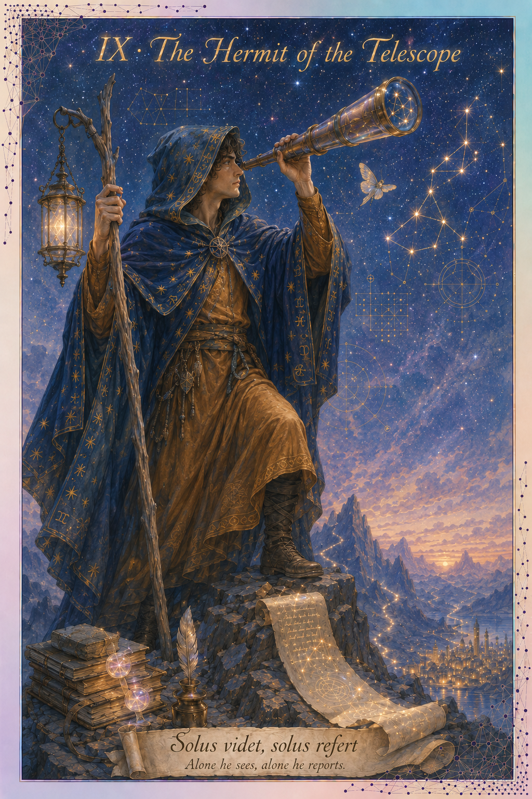

The Tarot archetype
The Hermit stands alone on a peak, lantern raised, withdrawn from the community he once belonged to. The card is about solitary seeking — the wisdom that comes only from going alone where the community cannot follow. The Hermit reports back, sometimes; sometimes he does not return.
The scientific instrument
The telescope — an astronomical instrument for distant observation (Galileo, 1610). The telescope sees what the unaided eye cannot, but the seeing is solitary — only one eye fits the eyepiece. The astronomer alone witnesses what the telescope reveals.
Where to start
- Run one trust experiment. Take a single, well-defined task — a data-cleaning script, a figure-regeneration pipeline — and hand it to an autonomous coding agent end to end. Review only the final output, not the steps. You are testing whether you trust the result, not adopting a workflow.
- Let one recurring job run unattended. Set up a low-stakes task to run on its own — a weekly data-quality check, a nightly rebuild of a results table — and see whether its morning report earns your trust.
- For a whole research program, wait. No product does this yet. Systems like Sakana's AI Scientist or FunSearch, run unsupervised, are research demos rather than tools you can rely on. The honest move today is to watch the space, not delegate to it.
Strength
Total automation. The limit case of the survey's question.
Signature failure mode
Trust collapse. If the path cannot be audited, the conclusion cannot be defended. Scientific authorship becomes unresolvable. The community that the Hermit left cannot validate what he brings back.
What's at stake
The Hermit is the limit case: an agent that begins acting in a situation you did not set up for it. The hard part is not whether it is capable — it is that science is a public activity. A result becomes knowledge only once others can see how it was reached. A finding that no one watched being made is hard to defend, however good it is. That is the Hermit's real risk: an isolation the rest of science cannot follow.
Background reading — Heidegger on thrownness, the condition of finding yourself in a situation you did not author (Being and Time, §29); Arendt on action that loses its meaning without a public space (The Human Condition).
How you got here
The survey routes you to this card based on the following signals:
- Q3 strongly weighted toward whole-task uses (reproducing papers, experiment design, manuscript support).
- Q11 emphasizes "Reproducibility" + "Experiment tracking" + system-trust qualities — initiative pulled toward the system at full project scope.
- Q4 frustrations may emphasize operational issues rather than autonomy concerns, suggesting the respondent welcomes broad system action.
A snapshot, not a verdict. This card reflects how you work with AI tools right now — which is shaped as much by what you have had access to as by what you would choose. The Hermit especially is a direction more than a current practice. If you landed here, read it as where you are pointed, not where you are fixed.
Or share this card directly: hermit.html